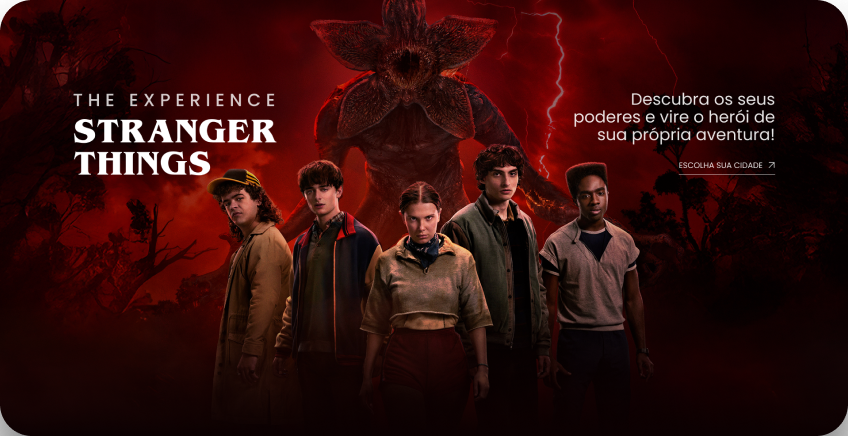
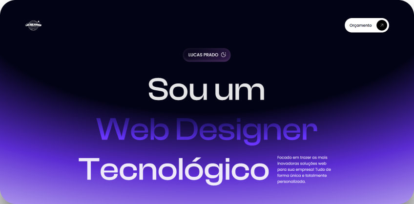
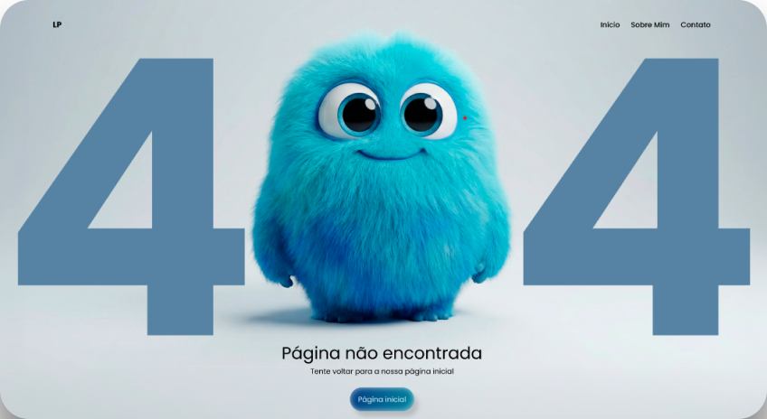

EU SOU
PRADO
WEB DESIGNER
SOBRE MIM
Sou um Web Designer e Desenvolvedor Full Stack especializado em projetos modernos e únicos focados em conversão. Transformo ideias em soluções reais, funcionais e escaláveis. Afinal, negócios são únicos e seus projetos também devem ser!
Me chamo Lucas do Prado, tenho 20 anos, curso Desenvolvimento de Sistemas, e possuo técnicos diversos na área Full Stack. Sou criativo, proativo e resiliente. Quero agregar positivamente a sua empresa, fazendo-a crescer e prosperar junto comigo.
PROJETOS

Landing page otimizada, animada e interativa, focada em UI/UX e também no refinamento do site anterior da série “Stranger Things” estreada pela plataforma Netflix. Foi Prontamente desenvolvida no evento DevArt: Projetos de Alto Valor do Desenvolvedor Gustavo Campelo, utilizando HTML, CSS, JS, GSAP, Figma e Photoshop

Site de portfólio moderno, com objetivo de otimizar e apresentar serviços e projetos de forma profissional e altamente eficaz e inovadora. É totalmente responsiva as demais telas, tanto desktop, como mobile, tablets e notebooks. Um diferencial enorme de se posicionar no mercado. Em seu desenvolvimento, foi utilizado HTML e CSS e para fins de design o Figma.

Landing Page do famoso “Erro 404” dado nos mais diversos dispositivos ao acessar algo e propriamente não encontrar sua devida página no campo de busca. É totalmente animada com o vídeo do personagem em questão apresentado, além de otimizada e focada em UI/UX. Foi desenvolvida utilizando HTML, CSS, JS, Flow IA (vídeo do monstrinho) e Figma em seu design.
Projeto 3D de uma página de vendas automatizada, focada em conversão, modernização, interatividade e animações. Um website escalável e funcional tendo base total UI/UX. Foi feito à partir do evento DevArt: Projetos de Alto Valor do Desenvolvedor Gustavo Campelo, utilizando HTML, CSS, JS, GSAP para animações com scroll, Three.js para inserção de elementos 3D, Flow IA para converter imagens em vídeos e Figma para seu design.